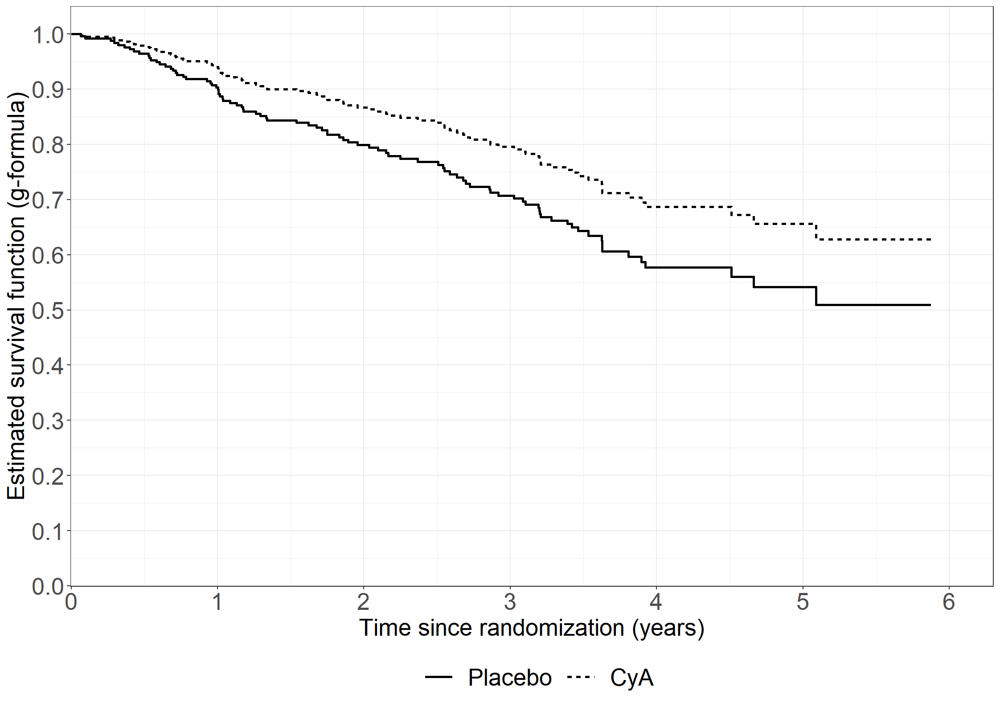
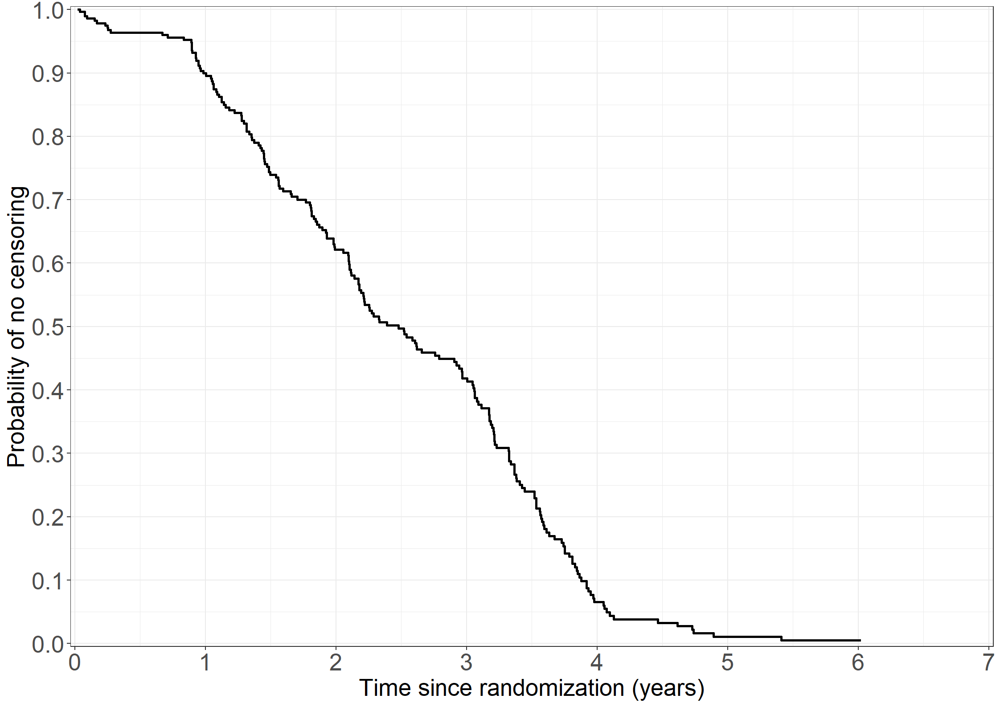

# g-formula# We want to predict responses if all subjects had been given both CyA and placebo (tment = 0,1)# We need to have n survival curves * 2# make a double data set with extra Zpbc3_counterfact <- pbc3pbc3_counterfact$tment <-ifelse(pbc3_counterfact$tment ==1, 0, 1) # opposite treatmentpbc3_double <-rbind(pbc3, pbc3_counterfact)# Baseline survivalcoxfit <-coxph(Surv(days, status !=0) ~ tment + alb + log2bili, data = pbc3, method ="breslow")pred <-survfit(coxfit, newdata =data.frame(tment =0, alb =0, log2bili =0))allsurv <-lapply(1:nrow(pbc3_double),function(i) pred$surv ^exp(coef(coxfit)[1] * pbc3_double$tment[i] +coef(coxfit)[2] * pbc3_double$alb[i] +coef(coxfit)[3] * pbc3_double$log2bili[i]))potout <-data.frame(surv =unlist(allsurv),tment =rep(pbc3_double$tment, each =length(pred$time)),time =rep(pred$time, times =nrow(pbc3)*2))# Average over valueslibrary(dplyr)sumdata <- potout %>%group_by(tment, time) %>%summarise(average_pred =mean(surv, na.rm =TRUE),.groups =c("keep"))sumdata <-as.data.frame(sumdata)# Create Figure 4.7fig4.7<-ggplot(aes(x = time /365.25, y = average_pred, linetype =as.factor(tment)),data = sumdata) +geom_step(linewidth =1) +scale_linetype_discrete("Treatment", labels =c("Placebo", "CyA")) +xlab("Time since randomization (years)") +ylab("Estimated survival function (g-formula)") +scale_x_continuous(expand =expansion(mult =c(0.001, 0.05)),limits =c(0, 6),breaks =seq(0, 6, 1)) +scale_y_continuous(expand =expansion(mult =c(0.001, 0.05)),limits =c(0, 1.0),breaks =seq(0, 1.0, 0.1)) + theme_general fig4.7

In-text: Cox and g-formula
Code show/hide
library(riskRegression)subpbc<-subset(pbc3, !is.na(alb))subpbc$tment<-relevel(factor(subpbc$tment),ref="0")cfit <-coxph(Surv(days, fail) ~ tment + alb + log2bili, data = subpbc, method ="breslow",y=TRUE,x=TRUE)atecfit<-ate(cfit, data = subpbc, treatment ="tment", times =2*365.25,cause=1, verbose=F)summary(atecfit,type="meanRisk",se=T)
Average treatment effect
- Treatment : tment (2 levels: "0" "1")
- Event : fail (cause: 1, censoring: 0)
- Time [min;max] : days [1;2150]
- Eval. time : 730.5
number at risk 0 102
number at risk 1 110
Estimation procedure
- Estimator : G-formula
- Uncertainty: Gaussian approximation
where the variance is estimated via the influence function
Testing procedure
- Null hypothesis : given two treatments (A,B) and a specific timepoint, equal risks
- Confidence level : 0.95
Results:
- Standardized risk between time zero and 'time', reported on the scale [0;1] (probability scale)
(average risk when treating all subjects with one treatment)
time tment risk se ci
730 0 0.201 0.0271 [0.15;0.25]
730 1 0.133 0.0217 [0.09;0.18]
risk : estimated standardized risk
ci : pointwise confidence intervals
Code show/hide
summary(atecfit,type="diffRisk",se=T)
Average treatment effect
- Treatment : tment (2 levels: "0" "1")
- Event : fail (cause: 1, censoring: 0)
- Time [min;max] : days [1;2150]
- Eval. time : 730.5
number at risk 0 102
number at risk 1 110
Estimation procedure
- Estimator : G-formula
- Uncertainty: Gaussian approximation
where the variance is estimated via the influence function
Testing procedure
- Null hypothesis : given two treatments (A,B) and a specific timepoint, equal risks
- Confidence level : 0.95
Results:
- Difference in standardized risk (B-A) between time zero and 'time'
reported on the scale [-1;1] (difference between two probabilities)
(difference in average risks when treating all subjects with the experimental treatment (B),
vs. treating all subjects with the reference treatment (A))
time tment=A tment=B difference se ci p.value
730 0 1 -0.0681 0.0259 [-0.12;-0.02] 0.00855
difference : estimated difference in standardized risks
ci : pointwise confidence intervals
p.value : (unadjusted) p-value
Code show/hide
# Survival instead of failure risk1-atecfit$meanRisk$estimate
[1] 0.7989143 0.8670633
Code show/hide
# BootstrapatecfitB<-ate(cfit, data = subpbc, treatment ="tment", times =2*365.25,cause=1, verbose=F, B=1000)summary(atecfitB,type="meanRisk",se=T)
Average treatment effect
- Treatment : tment (2 levels: "0" "1")
- Event : fail (cause: 1, censoring: 0)
- Time [min;max] : days [1;2150]
- Eval. time : 730.5
number at risk 0 102
number at risk 1 110
Estimation procedure
- Estimator : G-formula
- Uncertainty: Percentile bootstrap based on 1000 bootstrap samples
that were drawn with replacement from the original data.
Testing procedure
- Null hypothesis : given two treatments (A,B) and a specific timepoint, equal risks
- Confidence level : 0.95
Results:
- Standardized risk between time zero and 'time', reported on the scale [0;1] (probability scale)
(average risk when treating all subjects with one treatment)
time tment risk risk.boot se ci
730 0 0.201 0.199 0.0276 [0.15;0.25]
730 1 0.133 0.132 0.0220 [0.09;0.18]
risk : estimated standardized risk
risk.boot : average value over the bootstrap samples
ci : pointwise confidence intervals
Code show/hide
summary(atecfitB,type="diffRisk",se=T)
Average treatment effect
- Treatment : tment (2 levels: "0" "1")
- Event : fail (cause: 1, censoring: 0)
- Time [min;max] : days [1;2150]
- Eval. time : 730.5
number at risk 0 102
number at risk 1 110
Estimation procedure
- Estimator : G-formula
- Uncertainty: Percentile bootstrap based on 1000 bootstrap samples
that were drawn with replacement from the original data.
Testing procedure
- Null hypothesis : given two treatments (A,B) and a specific timepoint, equal risks
- Confidence level : 0.95
Results:
- Difference in standardized risk (B-A) between time zero and 'time'
reported on the scale [-1;1] (difference between two probabilities)
(difference in average risks when treating all subjects with the experimental treatment (B),
vs. treating all subjects with the reference treatment (A))
time tment=A tment=B difference difference.boot se ci p.value
730 0 1 -0.0681 -0.067 0.026 [-0.12;-0.02] 0.01
difference : estimated difference in standardized risks
difference.boot : average value over the bootstrap samples
ci : pointwise confidence intervals
p.value : (unadjusted) p-value
Code show/hide
# using mets packagelibrary(mets)cfitmets <-phreg(Surv(days, fail) ~ tment + alb + log2bili, data = subpbc)summary(survivalG(cfitmets, subpbc, time =2*365.25))
# Non-parametric, Kaplan Meiernp_km <-survfit(Surv(days, status !=0) ~ tment, data = pbc3)kmdata <-data.frame(surv = np_km$surv, time = np_km$time, strata =c(rep(names(np_km$strata[1]), np_km$strata[[1]]), rep(names(np_km$strata[2]), np_km$strata[[2]])))# Restrict to each treatkmdata0 <-subset(kmdata, strata =="tment=0")kmdata1 <-subset(kmdata, strata =="tment=1")# rmstlibrary(RISCA)rmst0 <-rmst(times = kmdata0$time, surv.rates = kmdata0$surv, max.time =3*365.25, type ="s")rmst1 <-rmst(times = kmdata1$time, surv.rates = kmdata1$surv, max.time =3*365.25, type ="s")# Cox model, alb = 38, bili = 45# Cox model fit with covariates tment, alb and log2bilicoxfit <-coxph(Surv(days, status !=0) ~ tment + alb + log2bili, data = pbc3, method ="breslow")# Unique followup times fu <-sort(unique(pbc3$days))# Data for predictionpreddata1 <-data.frame(tment =c(rep(0, length(fu)), rep(1, length(fu))), alb =rep(38, length(fu) *2),log2bili =rep(log2(45), length(fu) *2), days =c(fu, fu),status =rep(1, length(fu) *2))# Linear predictorpreds1 <-predict(coxfit, newdata = preddata1, type ="survival")preddata1$preds <- preds1cox10 <-subset(preddata1, tment =="0")cox11 <-subset(preddata1, tment =="1")# Rmst rmstcox10 <-rmst(times = cox10$days, surv.rates = cox10$preds, max.time =3*365.25, type ="s")rmstcox11 <-rmst(times = cox11$days, surv.rates = cox11$preds, max.time =3*365.25, type ="s")# Cox for alb = 20 and bili = 90 # Data for predictionpreddata2 <-data.frame(tment =c(rep(0, length(fu)), rep(1, length(fu))), alb =rep(20, length(fu) *2),log2bili =rep(log2(90), length(fu) *2), days =c(fu, fu),status =rep(1, length(fu) *2))# Linear predictorpreds2 <-predict(coxfit, newdata = preddata2, type ="survival")preddata2$preds <- preds2cox20 <-subset(preddata2, tment =="0")cox21 <-subset(preddata2, tment =="1")# Rmst rmstcox20 <-rmst(times = cox20$days, surv.rates = cox20$preds, max.time =3*365.25, type ="s")rmstcox21 <-rmst(times = cox21$days, surv.rates = cox21$preds, max.time =3*365.25, type ="s")# Cox model, g-formula# We want to predict responses if all subjects had been given both CyA and placebo (tment = 0,1)# We need to have n survival curves * 2# make a double data set with extra Zpbc3_counterfact <- pbc3pbc3_counterfact$tment <-ifelse(pbc3_counterfact$tment ==1, 0, 1) # opposite treatmentpbc3_double <-rbind(pbc3, pbc3_counterfact)# Baseline survivalpred <-survfit(coxfit, newdata =data.frame(tment =0, alb =0, log2bili =0))allsurv <-lapply(1:nrow(pbc3_double),function(i) pred$surv ^exp(coef(coxfit)[1] * pbc3_double$tment[i] +coef(coxfit)[2] * pbc3_double$alb[i] +coef(coxfit)[3] * pbc3_double$log2bili[i]))potout <-data.frame(surv =unlist(allsurv),tment =rep(pbc3_double$tment, each =length(pred$time)),time =rep(pred$time, times =nrow(pbc3)*2) )# Average over valuesrequire(dplyr)sumdata <- potout %>%group_by(tment, time) %>%summarise(average_pred =mean(surv, na.rm =TRUE),.groups =c("keep"))sumdata <-as.data.frame(sumdata)# Split data per groupcoxg0 <-subset(sumdata, tment =="0")coxg1 <-subset(sumdata, tment =="1")# Rmst rmstcoxg0 <-rmst(times = coxg0$time, surv.rates = coxg0$average_pred, max.time =3*365.25, type ="s")rmstcoxg1 <-rmst(times = coxg1$time, surv.rates = coxg1$average_pred, max.time =3*365.25, type ="s")##### BOOTSTRAP FOR SE'S ###### Resample data sets B <-200bootdata <-list()kmres <- cox1res <- cox2res <- coxgres <-list()#colnames(kmres) <- colnames(cox1res) <- colnames(cox2res) <- colnames(coxgres) <- c("rmst0", "rmst1")for (b in1:B){ bootdata[[b]] <- pbc3[sample(1:nrow(pbc3), size =nrow(pbc3), replace = T),]###### KM ####### np_km <-survfit(Surv(days, status !=0) ~ tment, data = bootdata[[b]]) kmdata <-data.frame(surv = np_km$surv, time = np_km$time, strata =c(rep(names(np_km$strata[1]), np_km$strata[[1]]), rep(names(np_km$strata[2]), np_km$strata[[2]])))# Restrict to each treat kmdata0 <-subset(kmdata, strata =="tment=0") kmdata1 <-subset(kmdata, strata =="tment=1")# rmst rmst0 <-rmst(times = kmdata0$time, surv.rates = kmdata0$surv, max.time =3*365.25, type ="s") rmst1 <-rmst(times = kmdata1$time, surv.rates = kmdata1$surv, max.time =3*365.25, type ="s") kmres[[b]] <-c(rmst0, rmst1)###### Cox 1 ####### coxfit <-coxph(Surv(days, status !=0) ~ tment + alb + log2bili, data = bootdata[[b]], method ="breslow")# Unique followup times fu <-sort(unique(pbc3$days))# Data for prediction preddata1 <-data.frame(tment =c(rep(0, length(fu)), rep(1, length(fu))), alb =rep(38, length(fu) *2),log2bili =rep(log2(45), length(fu) *2), days =c(fu, fu),status =rep(1, length(fu) *2))# Linear predictor preds1 <-predict(coxfit, newdata = preddata1, type ="survival") preddata1$preds <- preds1 cox10 <-subset(preddata1, tment =="0") cox11 <-subset(preddata1, tment =="1")# Rmst rmstcox10 <-rmst(times = cox10$days, surv.rates = cox10$preds, max.time =3*365.25, type ="s") rmstcox11 <-rmst(times = cox11$days, surv.rates = cox11$preds, max.time =3*365.25, type ="s") cox1res[[b]] <-c(rmstcox10, rmstcox11)###### Cox 2 ######## Cox for alb = 20 and bili = 90 # Data for prediction preddata2 <-data.frame(tment =c(rep(0, length(fu)), rep(1, length(fu))), alb =rep(20, length(fu) *2),log2bili =rep(log2(90), length(fu) *2), days =c(fu, fu),status =rep(1, length(fu) *2))# Linear predictor preds2 <-predict(coxfit, newdata = preddata2, type ="survival") preddata2$preds <- preds2 cox20 <-subset(preddata2, tment =="0") cox21 <-subset(preddata2, tment =="1")# Rmst rmstcox20 <-rmst(times = cox20$days, surv.rates = cox20$preds, max.time =3*365.25, type ="s") rmstcox21 <-rmst(times = cox21$days, surv.rates = cox21$preds, max.time =3*365.25, type ="s") cox2res[[b]] <-c(rmstcox20, rmstcox21) ##### Cox - g formula ######## We want to predict responses if all subjects had been given both CyA and placebo (tment = 0,1)# We need to have n survival curves * 2# make a double data set with extra Z pbc3_counterfact <- bootdata[[b]] pbc3_counterfact$tment <-ifelse(pbc3_counterfact$tment ==1, 0, 1) # opposite treatment pbc3_double <-rbind(bootdata[[b]], pbc3_counterfact)# Baseline survival pred <-survfit(coxfit, newdata =data.frame(tment =0, alb =0, log2bili =0)) allsurv <-lapply(1:nrow(pbc3_double),function(i) pred$surv ^exp(coef(coxfit)[1] * pbc3_double$tment[i] +coef(coxfit)[2] * pbc3_double$alb[i] +coef(coxfit)[3] * pbc3_double$log2bili[i])) potout <-data.frame(surv =unlist(allsurv),tment =rep(pbc3_double$tment, each =length(pred$time)),time =rep(pred$time, times =nrow(pbc3)*2) )# Average over valuesrequire(dplyr) sumdata <- potout %>%group_by(tment, time) %>%summarise(average_pred =mean(surv, na.rm =TRUE),.groups =c("keep")) sumdata <-as.data.frame(sumdata)# Split data per group coxg0 <-subset(sumdata, tment =="0") coxg1 <-subset(sumdata, tment =="1")# Rmst rmstcoxg0 <-rmst(times = coxg0$time, surv.rates = coxg0$average_pred, max.time =3*365.25, type ="s") rmstcoxg1 <-rmst(times = coxg1$time, surv.rates = coxg1$average_pred, max.time =3*365.25, type ="s") coxgres[[b]] <-c(rmstcoxg0, rmstcoxg1)}kmreso <-do.call("rbind", kmres)cox1reso <-do.call("rbind", cox1res)cox2reso <-do.call("rbind", cox2res)coxgreso <-do.call("rbind", coxgres)print("Finally, numbers for the Table:")
[1] "Finally, numbers for the Table:"
Code show/hide
# For non-parametric, KMapply(kmreso, 2, mean)/365.25
[1] 2.608194 2.683993
Code show/hide
apply(kmreso, 2, sd)/365.25
[1] 0.06035037 0.05455601
Code show/hide
# For Cox 1apply(cox1reso, 2, mean)/365.25
[1] 2.535274 2.725333
Code show/hide
apply(cox1reso, 2, sd)/365.25
[1] 0.06605981 0.05367204
Code show/hide
# For Cox 2apply(cox2reso, 2, mean)/365.25
[1] 0.9969405 1.4119949
Code show/hide
apply(cox2reso, 2, sd)/365.25
[1] 0.2619822 0.2741048
Code show/hide
# For Cox g formulaapply(coxgreso, 2, mean)/365.25
[1] 2.561153 2.711903
Code show/hide
apply(coxgreso, 2, sd)/365.25
[1] 0.05531151 0.04433616
Table 4.1 mets non-parametric version
Code show/hide
# non-parametric could also be done using mets packagelibrary(mets)out1 <-phreg(Surv(days/365.25,fail)~strata(tment),data=pbc3)rm1 <-resmean.phreg(out1,times=3)summary(rm1)
The truncation time: tau = 3 was specified.
Summary of between-group contrast (adjusted for the covariates)
Est. lower .95 upper .95 p
RMST (arm=1)-(arm=0) 0.168 0.016 0.320 0.031
RMST (arm=1)/(arm=0) 1.065 1.004 1.130 0.037
RMTL (arm=1)/(arm=0) 0.548 0.364 0.823 0.004
Model summary (difference of RMST)
coef se(coef) z p lower .95 upper .95
intercept 2.376 0.381 6.241 0.000 1.630 3.122
arm 0.168 0.078 2.160 0.031 0.016 0.320
alb 0.031 0.008 4.058 0.000 0.016 0.045
logbili -0.214 0.034 -6.207 0.000 -0.281 -0.146
Model summary (ratio of RMST)
coef se(coef) z p exp(coef) lower .95 upper .95
intercept 0.882 0.151 5.827 0.000 2.415 1.795 3.249
arm 0.063 0.030 2.089 0.037 1.065 1.004 1.130
alb 0.011 0.003 3.859 0.000 1.012 1.006 1.017
logbili -0.085 0.016 -5.499 0.000 0.918 0.891 0.947
Model summary (ratio of time-lost)
coef se(coef) z p exp(coef) lower .95 upper .95
intercept -0.142 0.802 -0.177 0.860 0.868 0.180 4.183
arm -0.602 0.208 -2.895 0.004 0.548 0.364 0.823
alb -0.095 0.017 -5.469 0.000 0.909 0.878 0.941
logbili 0.524 0.061 8.540 0.000 1.689 1.498 1.906
Code show/hide
data pbc3; set pbc3; followup=days/365.25;run;proc rmstreg data=pbc3 tau=3; model followup*status(0)=tment alb log2bili / link=linear method=ipcw(strata=tment);run;
Code show/hide
# using mets package gives a bit different model???library(mets)options(contrasts=c("contr.treatment", "contr.poly"))summary(resmeanIPCW(Event(days/365.25,fail)~factor(tment)+alb+log2bili,data=subset(pbc3,!is.na(alb)),time=3,model="linear", cens.model =~strata(tment)))
# Alternatively using package survival# Fine-Gray model for transplant# Two stepfg_c1 <-finegray(Surv(days, as.factor(status)) ~ tment + alb + log2bili + sex + age,etype =1, data =subset(pbc3, !is.na(alb)))fg_c1 <-finegray(Surv(days, as.factor(status)) ~ .,etype =1, data =subset(pbc3, !is.na(alb)))cifreg(Event(days,status)~tment+alb+log2bili+sex+age, cause=1, data =subset(pbc3, !is.na(alb)),propodds=NULL)
fg_c1 <-finegray(Surv(days, as.factor(status)) ~ .,etype =1, data = pbc3)fg_cox1 <-coxph(Surv(fgstart, fgstop, fgstatus) ~ tment + alb + log2bili + sex + age, weight = fgwt, data = fg_c1, eps=1e-9)summary(fg_cox1)
Call:
coxph(formula = Surv(fgstart, fgstop, fgstatus) ~ tment + alb +
log2bili + sex + age, data = fg_c1, weights = fgwt, eps = 1e-09)
n= 1068, number of events= 28
(6 observations deleted due to missingness)
coef exp(coef) se(coef) robust se z Pr(>|z|)
tment -0.40774 0.66515 0.40309 0.34975 -1.166 0.2437
alb -0.06967 0.93270 0.03843 0.03004 -2.320 0.0204 *
log2bili 0.61902 1.85711 0.12894 0.09125 6.784 1.17e-11 ***
sex 0.09140 1.09570 0.55194 0.55517 0.165 0.8692
age -0.07503 0.92772 0.02077 0.01591 -4.717 2.40e-06 ***
---
Signif. codes: 0 '***' 0.001 '**' 0.01 '*' 0.05 '.' 0.1 ' ' 1
exp(coef) exp(-coef) lower .95 upper .95
tment 0.6652 1.5034 0.3351 1.3202
alb 0.9327 1.0722 0.8794 0.9893
log2bili 1.8571 0.5385 1.5530 2.2208
sex 1.0957 0.9127 0.3691 3.2528
age 0.9277 1.0779 0.8992 0.9571
Concordance= 0.858 (se = 0.025 )
Likelihood ratio test= 52.2 on 5 df, p=5e-10
Wald test = 78.58 on 5 df, p=2e-15
Score (logrank) test = 56.45 on 5 df, p=7e-11, Robust = 21.27 p=7e-04
(Note: the likelihood ratio and score tests assume independence of
observations within a cluster, the Wald and robust score tests do not).
Code show/hide
# Fine-Gray model for death w/o transplant# Two stepfg_c2 <-finegray(Surv(days, as.factor(status)) ~ tment + alb + log2bili + sex + age,etype =2, data =subset(pbc3, !is.na(alb)))fg_c2 <-finegray(Surv(days, as.factor(status)) ~ .,etype =2, data =subset(pbc3, !is.na(alb)))fg_cox2 <-coxph(Surv(fgstart, fgstop, fgstatus) ~ tment + alb + log2bili + sex + age, weight = fgwt, data = fg_c2, ties ="breslow", eps=1e-9)summary(fg_cox2)
Call:
coxph(formula = Surv(fgstart, fgstop, fgstatus) ~ tment + alb +
log2bili + sex + age, data = fg_c2, weights = fgwt, ties = "breslow",
eps = 1e-09)
n= 1004, number of events= 60
coef exp(coef) se(coef) robust se z Pr(>|z|)
tment -0.35282 0.70270 0.26705 0.25111 -1.405 0.1600
alb -0.06122 0.94062 0.02870 0.02933 -2.087 0.0369 *
log2bili 0.61556 1.85069 0.09038 0.08521 7.224 5.06e-13 ***
sex 0.41484 1.51412 0.31251 0.30590 1.356 0.1751
age 0.08748 1.09142 0.01621 0.01507 5.804 6.47e-09 ***
---
Signif. codes: 0 '***' 0.001 '**' 0.01 '*' 0.05 '.' 0.1 ' ' 1
exp(coef) exp(-coef) lower .95 upper .95
tment 0.7027 1.4231 0.4296 1.1495
alb 0.9406 1.0631 0.8881 0.9963
log2bili 1.8507 0.5403 1.5660 2.1871
sex 1.5141 0.6604 0.8313 2.7577
age 1.0914 0.9162 1.0597 1.1241
Concordance= 0.829 (se = 0.024 )
Likelihood ratio test= 89.68 on 5 df, p=<2e-16
Wald test = 111.5 on 5 df, p=<2e-16
Score (logrank) test = 93.71 on 5 df, p=<2e-16, Robust = 43.86 p=2e-08
(Note: the likelihood ratio and score tests assume independence of
observations within a cluster, the Wald and robust score tests do not).
Code show/hide
* Death without transplantation; proc phreg data=pbc3; class sex (ref='1') tment (ref='0'); model days*status(0)=sex tment age log2bili alb / rl eventcode=2;run;* Transplantation; proc phreg data=pbc3; class sex (ref='1') tment (ref='0'); model days*status(0)=sex tment age log2bili alb / rl eventcode=1;run;
In-text: Fine-Gray and g-formula
Code show/hide
# Fine-Gray models using package metslibrary(mets)options(contrasts=c("contr.treatment", "contr.poly"))# Transplantsubpbc<-subset(pbc3, !is.na(alb))subpbc$trt<-factor(subpbc$tment)fgtrans<-cifreg(Event(days,status)~trt+alb+log2bili+sex+age, cause=1, data = subpbc, propodds=NULL, cox.prep=TRUE)fgtrans
Call:
cifreg(formula = Event(days, status) ~ trt + alb + log2bili +
sex + age, data = subpbc, cause = 1, propodds = NULL, cox.prep = TRUE)
n events
343 28
343 clusters
coeffients:
Estimate S.E. dU^-1/2 P-value
trt1 -0.407479 0.368430 0.403161 0.2687
alb -0.069736 0.032685 0.038429 0.0329
log2bili 0.619024 0.101177 0.128955 0.0000
sex 0.087804 0.579890 0.551723 0.8796
age -0.075062 0.017119 0.020770 0.0000
exp(coeffients):
Estimate 2.5% 97.5%
trt1 0.66533 0.32317 1.3698
alb 0.93264 0.87477 0.9943
log2bili 1.85711 1.52306 2.2644
sex 1.09177 0.35037 3.4020
age 0.92769 0.89708 0.9593
Code show/hide
# Death w/o transplantfgdeath<-cifreg(Event(days,status)~trt+alb+log2bili+sex+age, cause=2, data = subpbc, propodds=NULL, cox.prep=TRUE)fgdeath
Call:
cifreg(formula = Event(days, status) ~ trt + alb + log2bili +
sex + age, data = subpbc, cause = 2, propodds = NULL, cox.prep = TRUE)
n events
343 60
343 clusters
coeffients:
Estimate S.E. dU^-1/2 P-value
trt1 -0.352775 0.260075 0.267053 0.1750
alb -0.061245 0.030848 0.028700 0.0471
log2bili 0.615653 0.088872 0.090387 0.0000
sex 0.414735 0.316821 0.312520 0.1905
age 0.087488 0.015744 0.016208 0.0000
exp(coeffients):
Estimate 2.5% 97.5%
trt1 0.70274 0.42210 1.1700
alb 0.94059 0.88541 0.9992
log2bili 1.85087 1.55499 2.2030
sex 1.51397 0.81365 2.8171
age 1.09143 1.05826 1.1256
Code show/hide
# cannnot make this work!!!# Transplant#summary(summary(survivalG(fgtrans, subpbc, 2*365.25))
library(ggplot2)theme_general <-theme_bw() +theme(legend.position ="bottom",text =element_text(size =20),axis.text.x =element_text(size =20),axis.text.y =element_text(size =20))# Make KM estimate of censoring distributionprovany$time <-with(provany, ifelse(!is.na(timebleed), timebleed + timedeath, timedeath))censdist <-survfit(Surv(time, death ==0) ~1, data = provany)censdist
Call: survfit(formula = Surv(time, death == 0) ~ 1, data = provany)
n events median 0.95LCL 0.95UCL
[1,] 286 211 905 796 1082
Code show/hide
# Make data ready for plottingpdata <-data.frame(time = censdist$time,surv = censdist$surv)# Create Figurefig4.22<-ggplot(aes(x = time /365.25, y = surv),data = pdata) +geom_step(linewidth =1) +xlab("Time since randomization (years)") +ylab('Probability of no censoring') +scale_x_continuous(expand =expansion(mult =c(0.005, 0.005)),limits =c(0, 7),breaks =seq(0, 7, 1)) +scale_y_continuous(expand =expansion(mult =c(0.005, 0.005)),limits =c(0, 1.0),breaks =seq(0, 1.0, 0.1)) + theme_general +theme(legend.box ="vertical",legend.key.size =unit(1.5, 'cm'))fig4.22

Table 4.12
Code show/hide
library(survival)options(contrasts=c("contr.treatment", "contr.poly"))# treatcoxph(Surv(time, death ==0) ~ beh, data = provany)
Call:
coxph(formula = Surv(time, death == 0) ~ beh, data = provany)
coef exp(coef) se(coef) z p
beh1 0.03074 1.03122 0.19080 0.161 0.872
beh2 -0.04113 0.95970 0.18910 -0.218 0.828
beh3 0.04131 1.04218 0.20386 0.203 0.839
Likelihood ratio test=0.22 on 3 df, p=0.9751
n= 286, number of events= 211
Code show/hide
# size coxph(Surv(time, death ==0) ~factor(varsize), data = provany)
Call:
coxph(formula = Surv(time, death == 0) ~ factor(varsize), data = provany)
coef exp(coef) se(coef) z p
factor(varsize)2 -0.2324 0.7926 0.1465 -1.586 0.1127
factor(varsize)3 -0.4386 0.6449 0.2327 -1.885 0.0594
Likelihood ratio test=4.77 on 2 df, p=0.0922
n= 286, number of events= 211
Code show/hide
# sexcoxph(Surv(time, death ==0) ~ sex, data = provany)
Call:
coxph(formula = Surv(time, death == 0) ~ sex, data = provany)
coef exp(coef) se(coef) z p
sex 0.07847 1.08163 0.14542 0.54 0.589
Likelihood ratio test=0.29 on 1 df, p=0.588
n= 286, number of events= 211
Code show/hide
# coagcoxph(Surv(time, death ==0) ~ coag, data = provany)
Call:
coxph(formula = Surv(time, death == 0) ~ coag, data = provany)
coef exp(coef) se(coef) z p
coag -0.002827 0.997177 0.002635 -1.073 0.283
Likelihood ratio test=1.18 on 1 df, p=0.2775
n= 272, number of events= 199
(14 observations deleted due to missingness)
Code show/hide
# bilicoxph(Surv(time, death ==0) ~ log2bili, data = provany)
Call:
coxph(formula = Surv(time, death == 0) ~ log2bili, data = provany)
coef exp(coef) se(coef) z p
log2bili 0.07575 1.07870 0.05649 1.341 0.18
Likelihood ratio test=1.77 on 1 df, p=0.1834
n= 275, number of events= 202
(11 observations deleted due to missingness)
Code show/hide
# agecoxph(Surv(time, death ==0) ~ age, data = provany)
Call:
coxph(formula = Surv(time, death == 0) ~ age, data = provany)
coef exp(coef) se(coef) z p
age -0.017105 0.983040 0.005777 -2.961 0.00307
Likelihood ratio test=8.67 on 1 df, p=0.003242
n= 286, number of events= 211